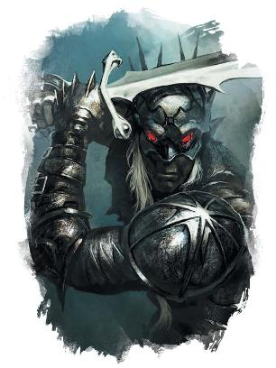

上一节讨论了坎纳斯不死生物的经典细节，以及一些你可以从这些细节中推断出来的想法。但除此之外，我对坎纳斯不死生物还有一些“官方kanon”观点。

首先，死灵学在不断发展——仅仅因为某事在终末战争时以某种方式进行，并不意味着这是它们在998 YK进行的唯一方式。因此，作为 DM，您可以引入不是使用奥达基尔仪式产生的有知觉的骷髅或僵尸。这些骷髅可能拥有更鲜明的个性，能够学习新技能，并拥有前世的记忆。你可以尝试一种不死生物的形式，它可以在腐烂的外壳中保存凡人的灵魂和记忆。尽管我在上一节中谈到了坎纳斯不死生物的设定，但如果这是您想要讲述的故事，这甚至可以适用于玩家角色。
即使死灵法术的进步创造了更高级形式的坎纳斯不死生物，我个人也认为坎纳斯不死生物应该让人感到毛骨悚然……而且我喜欢强调这样一个想法：即使是寻者也不知道他们到底在面对什么。玛伯尔是熵和失去的位面，是最终吞噬所有光明的黑暗——而玛伯尔的能量正在激发坎纳斯不死生物。你可以告诉自己，骷髅是由纯粹的坎纳斯爱国主义精神所驱动的。你也可以坚持认为那些骨头里已经没有了你妻子的任何东西……但有一天晚上，当她的骷髅在队伍中巡逻时，你可能会听到她的声音唱着一首只有你们两个人知道的歌。你可能想知道，如果你也死在战场上，你是否还能再次找到她——你可能想知道她的某些部分是否被困在那些骨头里，被残酷的灵魂俘虏，永远无法真正安息。
因此，就像艾伯伦中的任何事情一样，做适合故事的事情。但我个人一直在寻找一种让不死生物令人不安的方法。即使有一个僵尸拥有你朋友的完美记忆和个性，我也会指出他们的肉里有蛆虫，偶尔会有掉落的牙齿……而，且再重复一遍，你确定那真的是你朋友的灵魂吗？
除了上述内容之外，以下是我经常被问到的有关坎纳斯不死生物的一些问题的答案。
不死生物在坎纳斯被用于从事低端劳动吗？
当涉及到使用不死生物从事低端劳动时，有几个因素在起作用。沃尔之血的追随者——他们更喜欢“寻者Seekers”这个词——是那些练习死灵术并拥抱不死生物的人。沃尔之血在坎纳斯存在了一千多年，但它从未成为大多数人的信仰。终末战争期间，凯乌斯一世Kaius I转向沃尔之血，并让它获得了更大的影响力；在此期间，不死生物被编入坎纳斯军队。近年来，凯乌斯三世Kaius III和摄政王莫兰娜Regent Moranna转而反对沃尔之血。寻者的骑士团被解散，而凯乌斯将寻者当作替罪羊——将导致坎纳斯瘫痪的饥荒和瘟疫归咎于寻者。
因此，如今，该信仰在坎纳斯仍然占有重要地位，但它既不是多数人信仰，也没有国教的权力——因此，不死劳工已经会非常不受欢迎。坎纳斯传统主义者鄙视不死生物的使用，他们认为这是对坎纳斯引以为豪的军事传统的污点。这是凯乌斯将骸骨军团封印在埃图尔下方地窖中的另一个原因。他不想扔掉这件武器，但通过减少不死生物的作用，他在坎纳斯军阀中获得了政治点。
另一方面，寻者总是使用不死生物来完成卑微的任务。他们对尸体没有感情依恋；寻者希望自己的身体在离开后能够得到充分利用。因此，在寻者社区中，你肯定能发现僵尸在田间劳作。但这些都是传统的无意识僵尸，必须为他们提供明确的方向。有感知能力的坎纳斯僵尸是一种不同类型的生物——一种较新的生物，不适合执行非战斗任务。奥达基尔亡灵是武器：有感知能力，但充满了恶意
坎纳斯不死生物生前的家人会有探望时间来悼念死去的亲人吗？
不。首先，寻者对尸体并不感伤。死去亲人的骨头与死者生前穿的一套衣服或一件珠宝没有什么不同。沃尔之血的基本原则是，重要的是神圣火花（其他人可能称之为灵魂），而寻者相信这种火花在杜鲁尔Dolurrh中被湮灭了。寻者通过回忆死者的事迹并效仿他们的榜样来向死者表示敬意。死者留下的骨头是可以利用的资源，而不是值得珍惜的东西。此外，虽然在进行奥达基尔仪式时会注明捐赠者的身份，但这些信息并不公开，而且不死生物战士也不知道捐赠者的名字。
奥达基尔仪式的起源是什么?
奥达基尔仪式在《龙杂志#195》中进行了讨论。沃尔之血在奥达基尔的农业地区一直有着强大的影响力，该地区还存在一个与玛伯尔相关的强大的显能区域。当凯乌斯一世参与终末战争时，骸骨要塞在奥达基尔建立，作为死灵法术研究中心。吉纳尔·苏尔特和玛勒瓦诺（当时在世）经过多年的研究和工作，创造了奥达基尔仪式。值得注意的是，这些只能在拥有玛伯尔强显能区域的地方进行；在坎纳斯，这意味着骸骨要塞或埃图尔。
至于这到底是如何突破的，正典中并没有定义；对我来说，答案取决于我计划如何在故事中使用坎纳斯不死生物。舒尔特和马勒瓦诺是否在显能区域的中心发现了某种与玛伯尔有关的神器？
他们是否利用了守门人卡塔什卡的力量，或者从伊兰迪斯·沃尔那里获得了某种古老的卡巴林书籍？或者他们只是常规地开发了一种以前没有人掌握的新死灵技术，而这是完全可行的？尽管坎纳斯不死生物十分残忍，但他们真的像舒尔特所相信的那样吗——他们是受到了牺牲者的爱国精神力量驱使，还是隐藏着更黑暗的秘密？
坎纳斯不死生物会为坎纳斯军队的其他分支而创造吗？
与战俑相比，坎纳斯不死生物更不像机器人。它们没有被精确编程；《龙杂志#195》的文章指出，你不能用制造奥达基尔仪式不死农民。奥达基尔仪式的基本原则之一是同步：如果你在一名专业弓箭手的尸体上进行这些仪式，你会得到一名弓箭手，如果你在一名精英近战战士身上进行这些仪式，你会得到一名近战战士。此外，你只能创造士兵，不能创造农民或诗人。这强化了这样一个事实：坎纳斯不死生物有一些令人不安的地方；该仪式仅可以制造杀手。然而即便如此，这也不是完美的技能匹配：坎纳斯骷髅诡异地偏好双武器风格，这并非坎纳斯步兵的标准技术。再说强调一遍，他们无法学习全新的技能。
因此，若你登上的一艘坎纳斯大帆船由骷髅船员负责划桨，他们不会是熟练水手，且很可能只是普通的骷髅而非有知觉的坎纳斯不死生物。然而，同一艘大帆船或许会载有一队不死海军陆战队员（他们也有不需要呼吸的优势）。
虽然不死生物可以成为有趣的飞艇伞兵，但请记住，飞艇是最近才发展起来的（它们只被活跃使用了八年），且需要林兰德飞行员。正典中提到的大多数空战都涉及空中骑兵：瑟雷恩飞龙、安黛尔龙鹰。不过你当然可以给不死生物部队装备羽落硬币，然后将它们投入敌方领土；它们拥有黑暗视觉，不需要食物或睡眠，能够不知疲倦地行动，且乐于发动自杀式袭击。
如果坎纳斯不死生物在内战期间被迫相互攻击，他们会如何反应？
没有人知道坎纳斯不死生物是否会互相战斗。这是传统主义军阀讨厌使用不死生物的原因之一——他们不知道不死生物忠诚的真正所在。不死生物军队在终末战争期间从未背叛过坎纳斯…… 但若坎纳斯人与坎纳斯人交战会发生什么？他们会服从当地的指挥官吗？他们会忠于王室吗？他们会忠于他们认为应得王冠的人吗？如果是的话，这是否证明他们支持的候选人的正统性？或一旦你告诉他们“让坎纳斯人流血”，他们可能会攻击所有坎纳斯人？
除此之外，罪髓女士安排了沃尔之血和坎纳斯王室间的联盟。罪髓女士完全有可能有一个后手——允许她控制所有坎纳斯不死生物。既然如此，她为何仍未使用这种力量呢？
她可能正等候一个特定的时刻，或她需要某种东西来控制不死生物——一件神器或超凡奇械——而冒险者可能是阻止她获得这些东西的唯一希望！